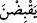

anlamınadır. Âyette yer alan “sâffât”; açılan ve kapatılan kuşların kanatlarıdır. Buna
göre âyet-i kerîmenin mânâsı; “üstlerinde uçtukları esnâda hava boşluğunda kanatlarını
aça kapata uçan kuşları hiç görmediler mi?” demek olur. Çünkü kuşlar kanatlarını
açtıklarında kanat tüyleri aynı hizada saf hâline gelmiş olur.
“ /Yakbıdne” fiili, “kanatlarını kapatarak” anlamındadır. Kuşların yan
taraflarındaki kanatlarını kapattıklarını ifâde etmek üzere bu fiil kullanılır. Havada uçan
kuş hareket edebilmek için zaman zaman böyle kanadını açıp kapatarak uçuşu
gerçekleştirir. Burada kuşların zaman zaman kanatlarını kapattıkları anlamına gelen
“yakbıdne” kelimesi, “kabidât” kelimesine tercih edilmiştir. Çünkü havada uçuş işlemi
tıpkı suda yüzmek gibidir. Yüzme fiilinde nasıl ki aslolan insanın kolunu açıp kapatması
ise uçma fiilinde de kanadın açılması ve kapatılmasıdır. Kanadın kapatılması uçma
işleminin gerçekleştirilebilmesi için belirli zaman dilimleri ile olacaktır. Bu tıpkı suda
yüzen insanın yaptığı hareket gibidir.
“Onları havada” rahmeti her şeyi içine alan ve kuşatan “Rahman olan Allah’tan
başkası tutmuyor.” Cismânî karakterin gereğinin tam tersine kuşlar kanatlarını açıp
kapatırken onları yere düşmekten Rahmân’dan başkası koruyup havada tutmuyor. Oysa
cismânî karakterin gereği havada kanadını açıp kapatan kuşun yere düşmesidir.
Rahman’ın rahmeti her şeyi o derece kuşatmıştır ki o kuşları şekil şekil, çeşitli
özelliklerde yaratmış ve onları uçup havada yol alabilecek biçimde hazırlamıştır.
“Şüphesiz o her şeyi görmektedir.” Şüphesiz O, benzersiz yaratmayı, akıllara
durgunluk verecek tuhaf şeyleri çekip çevirmeyi bilir. Âyetin metninde geçen “basîr”
kelimesi; müşâhede eden, gören ve toprağın altındaki şey kendisine gizli kalmayan
demektir. Toprağın içinde gizli bulunan şeyler Allah Teâlâ açısından bir vasıf ve
nitelemeden ibârettir. Bu öyle bir vasıftır ki, görülen eşyanın sıfatlarındaki kemal
bununla ortaya çıkar.
“Basar” sıfatı, -Kaderiye mezhebinin görüşünün aksine- Allah Teâlâ’nın ilmi üzerine
zaid bir sıfattır. Kim bu sıfatı bilirse, bununla maksadın, O’nun murâkabesinin devamlı
olduğunu, insandan çok hassas ve pek ince bir muhâsebe istendiği anlamına geldiğini
bilir. Murâkabe, îmânın semerelerinden birisidir.
Padişahlardan birisinin, köleleri arasında kendisine daha yakın kıldığı ve daha değer
verdiği bir kölesi vardır. Bu köle diğerlerinden ne daha güzeldir ve ne de daha çok
kıymetlidir. Bu gerçeği görenler padişahın bu hareketini tuhaf karşılarlar. Günlerden bir
gün padişah beraberinde arkadaşları ve köleleri olduğu hâlde çöle çıkarlar. Birden
padişahın gözü uzaklarda bir dağa ilişir, bu dağ üzerinde kar vardır. Hükümdar bu dağın
zirvesine sâdece bir kez bakmış sonra bakışlarını önüne eğmiştir. Bu gelişme üzerine o
köle hükümdar kendisine bakmadığı, herhangi bir işârette bulunmadığı hâlde birden
atını harekete geçirip mahmuzlar. Padişahla birlikte bulunan topluluk bu kölenin atını
niçin böyle harekete geçirdiğini bilmezler ve buna bir anlam veremezler. Çok geçmeden